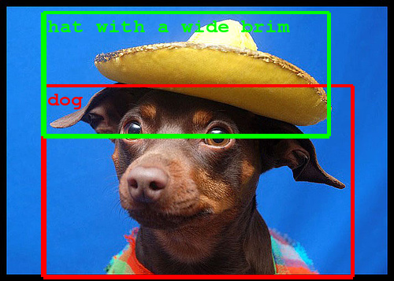
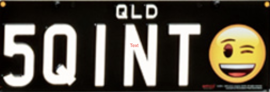
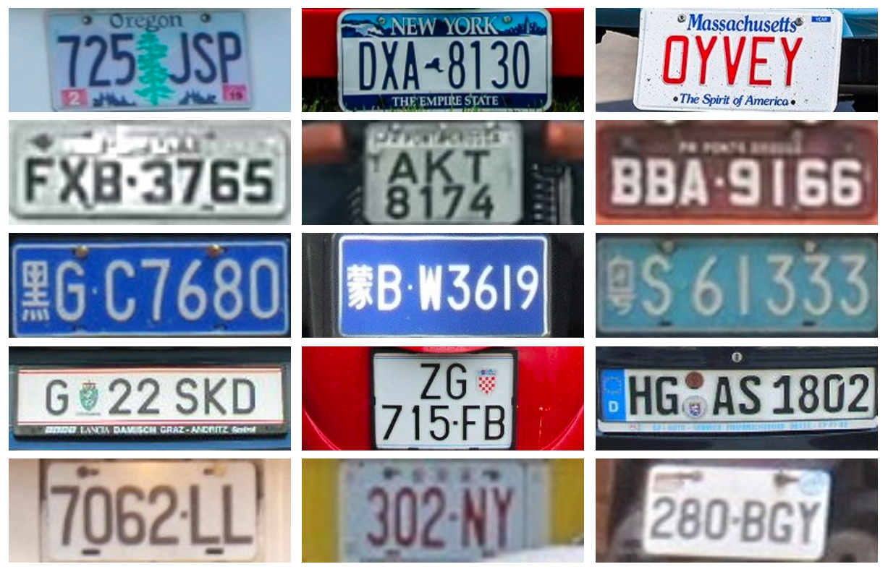
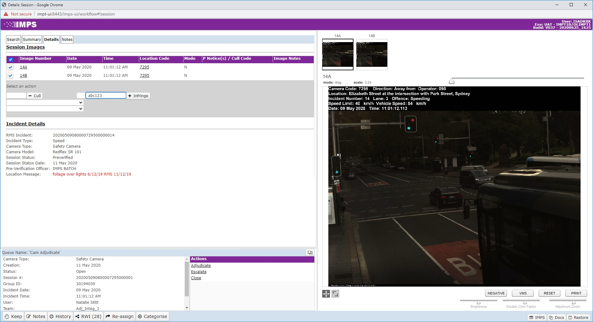
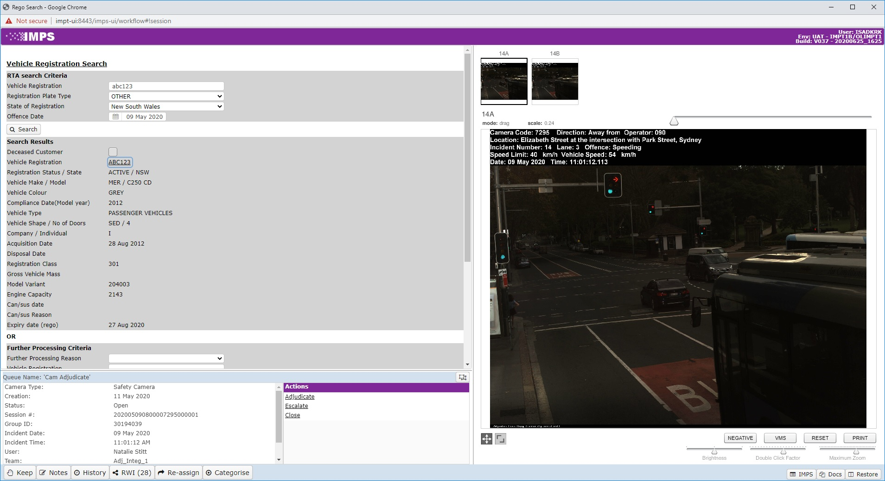
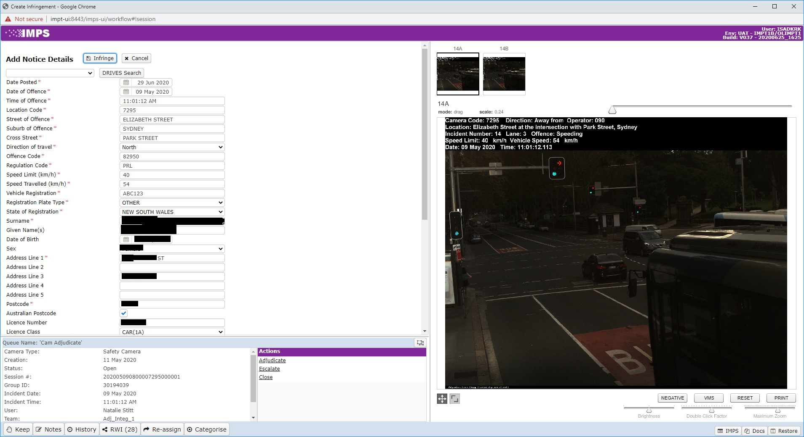

Automatic Number Plate Recognition (ANPR)
A 6 week experiment using Deep Learning
Why ANPR?
Get a computer to perform a tedious, repetitive task using deep learning, so DCS staff can focus on high value, personalised customer transactions.
Why Deep Learning?

- Deal with the diversity of Australian plates - at least 15,000 unique designs
- Can learn to recognise plates better as the system is fed more labeled data.

Results
- We can identify a number plate in an image with >95% accuracy
- We can read the text on it with 70% accuracy
- As a proof of concept, the system was trained on a pre-existing dataset of foreign plates

Training and Integration
- With training, the system will get better at recognising Australian plates
- We can integrate with other data sources, like Drives.
Current Process - Step 1

Current Process - Step 2

Current Process - Step 3

What's Next?
We can use our Deep Learning capability to tackle other problems. For example, common exceptions.
Cross Government Utility
- Works for plates Australia wide
- Useful for: Revenue NSW, TransportForNSW, Tolls, National Parks, Biosecurity, licensing, etc...,
This is just the beginning of our Deep learning and Emerging tech work in NSW!